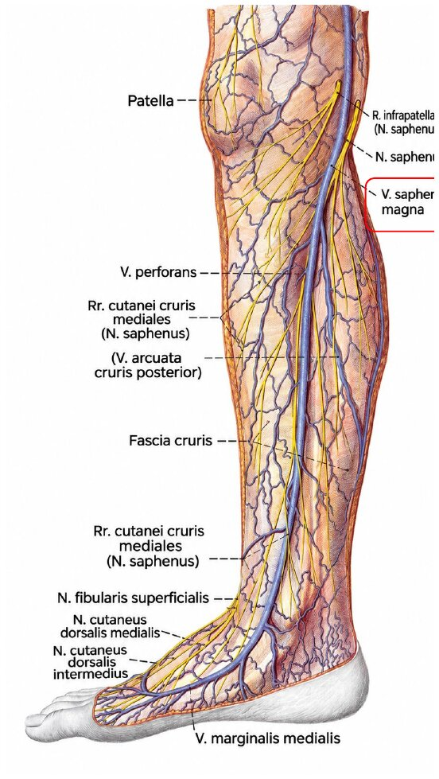
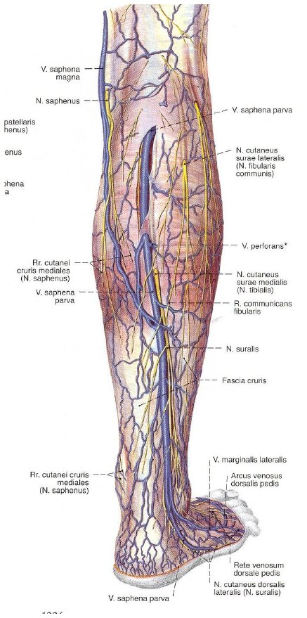
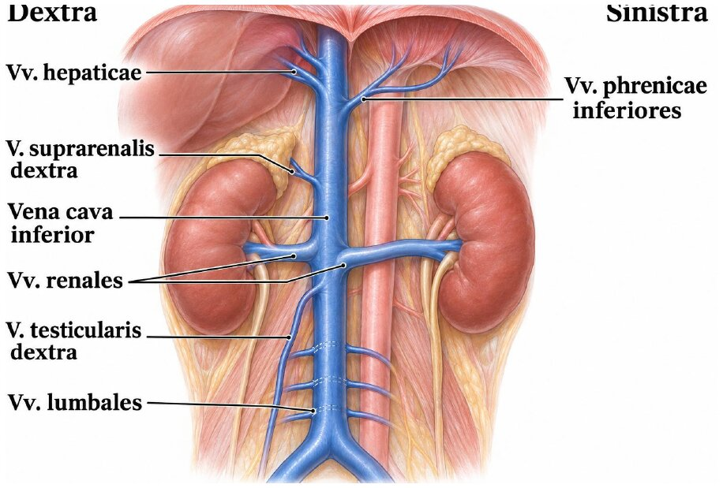

Bölüm 8 · Venae membri inferioris et vena cava inferior
Bu bölümün en çok sorulan bilgileri iki tanedir. Vücudun en uzun yüzeyel veni olan v. saphena magna'nın seyri ve n. saphenus ile komşuluğu 2024-2025'te iki ayrı soruda soruldu. Gonadal venlerin sağ-sol farkı, yani sol v. testicularis'in VCİ'ye değil sol v. renalis'e açılması da iki kaynakta soruldu. Bu bölüm yüzeyel venlerle başlar, derin venler ve kas pompasıyla devam eder, v. cava inferior ve kollateral yollarla biter.
Alt ekstremitenin venleri üç sisteme ayrılır. Yüzeyel sistem derin fasyanın (fascia profunda) yüzeyinde, deri altında yer alır. Ana gövdeleri v. saphena magna ve v. saphena parva'dır. Bu iki ven kendi safen kompartımanında seyreder: yüzeyelde safen fasya, derinde fascia profunda ile sınırlı bir bölme. Onlara katılan yan dalların çoğu bu bölmenin dışındadır. Derin sistem fascia profunda'nın altındadır ve venlerin çoğu arterlere eşlik eder. Perforan venler derin fasyayı geçerek iki sistemi birleştirir.
Yüzeyel venler ayak sırtındaki arcus venosus dorsalis pedis'ten başlar. Arkın medial ucu v. marginalis medialis olarak malleolus medialis'in önüne, lateral ucu v. marginalis lateralis olarak malleolus lateralis'in arkasına yönelir.
| Özellik | V. saphena magna | V. saphena parva |
|---|---|---|
| Başlangıç | V. marginalis medialis | V. marginalis lateralis |
| Ayak bileğinde | Malleolus medialis'in önünden geçer (kemik işareti, venöz girişim yeri) | Malleolus lateralis'in arkasından geçer |
| Bacakta ve dizde | Bacağın medial yüzünde yükselir, femurun medial kondilinin arkasından uyluğa çıkar | Tendo calcaneus'un lateralinden bacağın arka yüzüne geçer, m. gastrocnemius'un iki başı arasında yükselir |
| Sinir komşuluğu | N. saphenus (n. femoralis'in duyu dalı), bacağın medialinde | N. suralis, malleolus lateralis'in arkasında |
| Sonlanma | Uyluğun üst medialinde fascia lata'daki hiatus saphenus'tan (fascia cribrosa'yı geçerek) v. femoralis'e açılır (junctio saphenofemoralis) | Çoğunlukla fossa poplitea'da fascia poplitea'yı geçip v. poplitea'ya açılır (junctio saphenopoplitea). Uyluğa uzanıp v. saphena magna ile birleşebilir. |


V. saphena magna alt ekstremitenin ve vücudun en uzun yüzeyel venidir. Ayak bileğinden kasığa kadar bacağın, dizin ve uyluğun medialinde seyreder ve bacakta n. saphenus'a eşlik eder (2024-2025, iki ayrı soruda). Bu komşuluğun iki klinik sonucu vardır. Koroner bypass için safen ven grefti alınırken n. saphenus ya da dalları zedelenebilir ve hasta medial bacak ile medial ayak bileği çevresinde uyuşma tarif eder. Greft ters çevrilerek takılır, çünkü kapakları kalbe doğru akıma izin verecek yöndedir ve ters çevrilmezse arteriyel akımı engeller.
Junctio saphenofemoralis lig. inguinale'nin distalinde, trigonum femorale içindedir. Bileşke yakınında v. saphena magna'ya üç yüzeyel ven katılır: v. epigastrica superficialis, v. circumflexa ilium superficialis ve vv. pudendae externae. Bu venler a. femoralis'in aynı adlı yüzeyel dallarına eşlik eder (Bölüm 7.1). Birleşme düzeni kişiden kişiye değişir. Hiatus saphenus uyluğun üst kısmında yüzeyden derine geçiş yeridir. Hiatus adductorius ise uyluğun distalinde, derin damarların geçtiği açıklıktır. İki hiatus karıştırılmamalıdır.
Vv. perforantes fascia profunda'yı geçerek yüzeyel venleri derin venlere bağlar. Bacakta kapakları çoğunlukla yüzeyelden derine akıma izin verir. Medial bacakta tibianın medial kenarına yakın vv. perforantes paratibiales ve posteromedialde vv. perforantes tibiales posteriores bulunur. Aynı sistem içindeki venleri birbirine bağlayan venlere ise vv. communicantes denir.
Baldır kas pompası. Ayakta dururken kalp ile ayak bileği arasındaki yükseklik farkı distal venlerde hidrostatik basıncı artırır. Yürürken baldır kasları kasılır, derin venleri sıkıştırır ve kanı proksimale iter. Kapaklar kanın distale geri kaçmasını önler. Kaslar gevşediğinde derin venler yeniden dolar ve yüzeyel sistemden perforan venler yoluyla kan gelir. Safen ya da perforan venlerin kapakları yetersizleşirse kan derinden yüzeyele ve yukarıdan aşağıya geri akar (reflü), yüzeyel venler genişler ve kıvrılır: varis. Medial bacak ve uyluktaki varisler v. saphena magna'nın seyriyle örtüşür. Hareketsizlik pompanın az çalışmasına ve venöz staza yol açar.
Derin venler arterlere eşlik eder ve bacakta genellikle çifttir. Ayak tabanında vv. plantares mediales ve laterales malleolus medialis'in arkasında vv. tibiales posteriores'e, ayak sırtının derin venleri vv. tibiales anteriores'e katılır. Vv. tibiales anteriores membrana interossea'nın üst açıklığından arkaya geçer. Vv. fibulares genellikle posterior tibial venlere katılır. Soleus'un venöz sinüsleri vv. tibiales posteriores ya da fibulares'e, gastrocnemius'un kas içi venleri v. poplitea'ya açılır. Bu kas venleri baldırdaki derin ven trombozunun sık başlangıç yerleridir.
Klinik önemi. Kalça ameliyatı sonrası hareketsiz kalan bir hastada tek taraflı baldır ağrısı ve şişlik, ultrasonda kompresyonla kapanmayan v. poplitea derin ven trombozunu düşündürür. Kopan bir trombüs v. femoralis → v. iliaca externa → v. iliaca communis → v. cava inferior → atrium dextrum → ventriculus dexter → truncus pulmonalis yolunu izleyerek akciğer embolisine yol açar.
V. cava inferior sağ ve sol v. iliaca communis'in yaklaşık L5 düzeyinde birleşmesiyle oluşur. Retroperitoneal olarak lomber vertebraların önünde ve aortanın sağında yükselir. Seyrinin bir bölümünde duodenum ve pankreas başının arkasında kalır. Karaciğerin arka yüzündeki sulcus venae cavae'ye girer ve diyaframın centrum tendineum'undaki foramen venae cavae'den yaklaşık T8 düzeyinde geçer. Kısa bir göğüs içi seyirden sonra atrium dextrum'a açılır. (Hiatus aorticus daha arkada ve T12 düzeyindedir.)
| VCİ'ye doğrudan açılanlar |
|---|
| Vv. hepaticae (diyaframa yakın bölüme) |
| Vv. phrenicae inferiores |
| V. suprarenalis dextra |
| Vv. renales (sağ ve sol) |
| V. testicularis / ovarica dextra |
| Vv. lumbales (3. ve 4.) |
| Vv. iliacae communes (oluşturan venler) |

Şekil 8.2 — V. cava inferior'a açılan venler (önden). Sağ v. suprarenalis ve sağ v. testicularis doğrudan VCİ'ye, sol taraftaki eşleri sol v. renalis'e açılır.
VCİ orta hattın sağında olduğu için sağdaki gonadal ve suprarenal venler ona doğrudan açılır. Soldakiler ise sol v. renalis'e açılır: v. testicularis sinistra (ya da ovarica) ve v. suprarenalis sinistra (2023-2024 S2: VCİ'ye açılmayan ven; Derleme S66: v. testicularis sağda VCİ'ye, solda sol v. renalis'e). Sol v. renalis sağdakinden uzundur ve VCİ'ye ulaşmak için aortanın önünden, a. mesenterica superior'un arkasından geçer. Bu iki arter arasında sıkışırsa sol böbrek ve sol testis venlerinde basınç artar (nutcracker fenomeni). Sol tarafta varikoselin daha sık görülmesi de sol v. testicularis'in uzun seyri ve sol v. renalis'e dik açıyla açılmasıyla ilişkilendirilir. Sol v. renalis bazen aortanın arkasından (retroaortik) ya da iki kol hâlinde aortanın iki yanından (sirkumaortik) geçer.
Kaval tıkanmada kollateral yollar. VCİ tıkandığında alt gövdenin kanı iki yolla VCS sistemine ulaşır. Derin yolda vv. lumbales ascendentes sağda v. azygos, solda v. hemiazygos ile bağlanır (Bölüm 3.4). Yüzeyel yolda v. epigastrica superficialis, karın ve göğüs yan duvarındaki v. thoracoepigastrica üzerinden v. thoracica lateralis ve v. axillaris'e bağlanır. Karın duvarındaki genişlemiş venlerde akım aşağıdan yukarıya doğrudur. Caput medusae'den farkı budur (Bölüm 6.3). Varyasyonlar: çift VCİ, sol tarafta seyreden VCİ ve kaval yolun kesintiye uğradığı durumlarda alt gövdenin kanının v. azygos üzerinden döndüğü "azygos devamlılığı".
Doğru: A. V. saphena magna ayak sırtındaki venöz arkın medial ucundan başlar, malleolus medialis'in önünden geçer ve bacak, diz ve uyluğun medialinde kasığa kadar yükselir. Vücudun en uzun venidir.
B, D ve E yanlış: v. tibialis anterior, v. femoralis ve v. poplitea arterlere eşlik eden derin venlerdir. C yanlış: v. saphena parva yüzeyeldir ama yalnızca bacağın arka yüzünde seyreder ve fossa poplitea'da sonlanır.
Doğru: E. N. femoralis'in duyu dalı n. saphenus diz medialinde yüzeyelleşir ve bacağın medialinde v. saphena magna'ya eşlik eder.
A yanlış: v. saphena accessoria uyluğun ön ya da arka yüzünden gelip safen gövdeye ya da bileşkeye katılan bir yan daldır. B ve C yanlış: derin venlerdir. V. femoralis canalis adductorius içinde n. saphenus ile birlikte bulunur ama uyluğun ortasında kalır, bacağa inmez. D yanlış: v. saphena parva bacağın arkasında n. suralis'e eşlik eder.
Doğru: D. Sol v. testicularis sol v. renalis'e açılır. Kan VCİ'ye ancak sol v. renalis üzerinden ulaşır.
A yanlış: alt lomber venler VCİ'ye açılır. B yanlış: sağ gonadal ven VCİ'ye doğrudan açılır. C yanlış: sol v. renalis aortanın önünden geçerek VCİ'ye açılır. E yanlış: vv. hepaticae VCİ'nin diyaframa yakın bölümüne açılır.
Doğru: C. Sağ v. testicularis VCİ'ye doğrudan, sol v. testicularis sol v. renalis'e açılır.
A yanlış: sol ven VCİ'ye doğrudan ulaşmaz. B yanlış: sağ ven sağ v. renalis'e değil doğrudan VCİ'ye açılır. D ve E yanlış: gonadal venler sistemik venlerdir, portal sisteme açılmaz.
Doğru: B. VCS ve VCİ'nin getirdiği kan sağ atriyumda toplanır. Sağ atriyumdaki ve ona açılan büyük venlerdeki bu basınca santral venöz basınç denir. Normal değeri yaklaşık 0 mmHg'dir. Venöz dönüşün artması ya da sağ kalbin pompalama gücünün azalması bu basıncı yükseltir.
A eksiktir: sağ atriyum basıncı fiilen aynı değeri ölçer, ama tüm sistemlerden gelen kanın oluşturduğu basıncın adı santral venöz basınçtır. C yanlış: periferik venöz basınç ekstremite venlerindeki basınçtır ve hidrostatik etkiyle ayakta daha yüksektir. D yanlış: nabız (pulsasyon) basıncı sistolik ile diyastolik arter basınçları arasındaki farktır. E yanlış: sol ventrikül sistemik arteriyel basıncı oluşturur.
Doğru: D. V. saphena parva bacağın arkasında gastrocnemius başları arasında yükselir ve çoğunlukla fossa poplitea'da fascia poplitea'yı geçerek v. poplitea'ya açılır.
A yanlış: v. femoralis'e v. saphena magna açılır. B yanlış: v. saphena parva uyluğa uzanıp v. saphena magna ile bağlantı kurabilir, ama bu tipik sonlanma değildir. C yanlış: posterior tibial venler derin venlerdir ve v. poplitea'yı oluşturur. E yanlış: v. profunda femoris uyluğun derin venlerini toplar.
Doğru: A. Derin venöz kan v. poplitea'dan v. femoralis, iliak venler ve VCİ ile sağ atriyuma, oradan sağ ventrikül ve truncus pulmonalis ile akciğere gider.
B yanlış: trombüs derin sistemdedir ve kan sol atriyuma değil sağ atriyuma döner. C yanlış: v. iliaca interna pelvisin venidir, iliak venler portal sisteme açılmaz. D yanlış: azygos yolu ancak VCİ tıkalıysa kollateral olarak kullanılır. E yanlış: venöz kan aortaya geçmez.
Doğru: E. Sol v. renalis VCİ'ye ulaşmak için aortanın önünden ve SMA'nın arkasından geçer. Sol v. suprarenalis ve sol gonadal ven genellikle ona açılır.
A yanlış: VCİ aortanın sağındadır, SMA'nın arkasından geçmez. B yanlış: sağ gonadal ven doğrudan VCİ'ye açılır. C yanlış: v. splenica pankreasın arkasında seyreder ve SMA'nın önünde v. mesenterica superior ile birleşir. Aorta ile SMA arasından geçmez. D yanlış: sağ v. renalis kısadır ve aortayı çaprazlamaz. V. suprarenalis dextra doğrudan VCİ'ye açılır.
Doğru: C. V. saphena magna malleolus medialis'in hemen önünden geçer. Bu kemik işareti damar görülemese de veni bulmayı sağlar.
A ve E yanlış: bunlar v. saphena parva'nın seyridir. B yanlış: fossa poplitea'da v. saphena parva derine geçer, magna dizin medialindedir. D yanlış: v. saphena magna kasıkta v. femoralis'e açılır. V. femoralis arterin medialindedir, lateralinde değil.